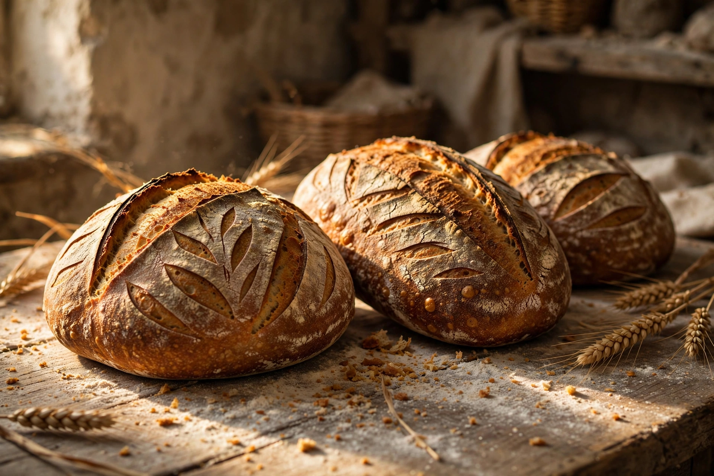
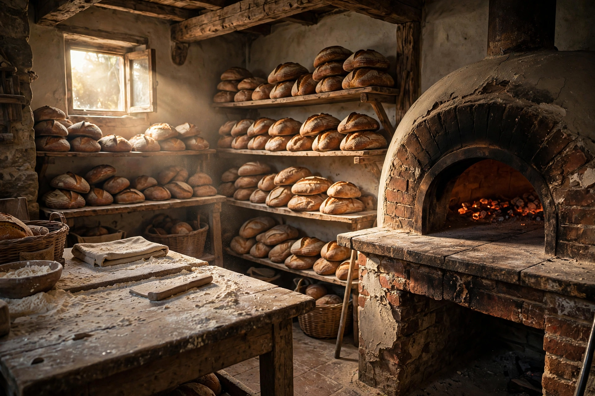
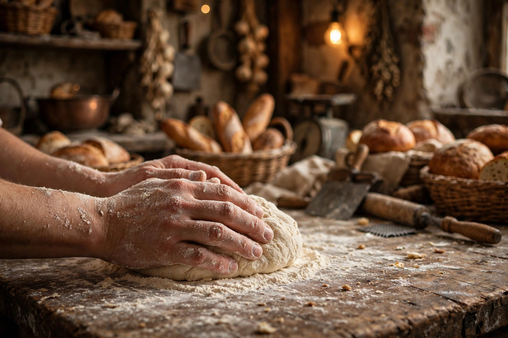

Signature sourdough
Slow-fermented and wood-fired, with deep flavour and a proper crust — the loaf the bakery is known for.

On Southside Street since 1597, we bake slow-fermented sourdough and heritage loaves every morning — and run a traditional delicatessen counter alongside.

Few bakeries anywhere can claim four centuries of daily baking. Ours can. The ovens, the recipes and the early mornings have been handed down through generations of Plymouth bakers.
The bakery begins its life on Southside Street — before the Mayflower ever sailed.
Our loaves have taken gold at the World Bread Awards — twice.
Still a working bakery first: bread out of the oven every morning, deli counter alongside.
Beyond the morning counter, Jacka bakes to order — and supplies the neighbourhood that bakes around it.
Celebration cakes are made to order for special occasions. Ask in store or call us to talk through what you have in mind.
We supply fresh bread daily to local cafés, restaurants and events. Ask in store or call for wholesale enquiries.
You'll find us on Southside Street in the Barbican — follow the smell of fresh bread.
38 Southside Street, Plymouth PL1 2LE
Get directions Call +44 1752 262187